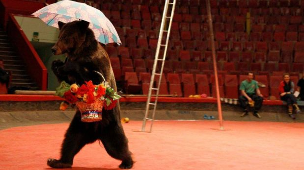
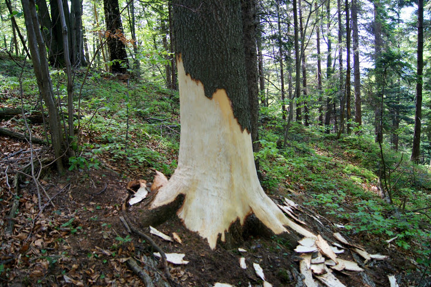

Ciekawostki
- Najbardziej rozwiniętym zmysłem u wszystkich niedźwiedzi jest węch.
- Niedźwiedź brunatny najliczniej występuje na terenie Rumunii, gdzie żyje ok. 5500 osobników tego gatunku.
- Na przełomie XVI i XVII wieku w Europie istniały specjalne szkoły wyspecjalizowane w tresowaniu niedźwiedzi brunatnych tak, by zapewniały rozrywkę ludziom, np. w czasie festynów. Jedna z bardziej znanych, prowadzona przez Cyganów, nosiła żartobliwą nazwę Akademii Smorgońskiej. Stosowane tam metody nie były humanitarne, ocierały się niekiedy o okrucieństwo. 
- W niewoli niedźwiedź brunatny może dożyć nawet 40 lat, jednak na wolności długość życia tego gatunku z reguły nie przekracza 25 lat.
- Niedźwiedź brunatny ma bardzo charakterystyczny sposób zaznaczania terytorium: najpierw zrywa pazurami kore z drzew, potem tarza się we własnym moczu i ociera o okorowane drzewo. 
- Niedźwiedzie słabo widzą w ciemnościach, zatem ich główna pora aktywności przypada na popołudnie.
- Ciąża u niedźwiedzia brunatnego trwa 8 miesięcy i w jej wyniku na świat przychodzi 2- 3 młodych. Poród następuje podczas zimowego snu samicy, zwykle między grudniem a lutym. Małe rodzą się całkowicie niesamodzielne. Pierwsze tygodnie życia spędzają tak mocno wtulone w futro matki, że nawet nie dotykają podłoża, co pozwala im przeżyć w zimnym otoczeniu.
- Wszystkie karpackie ostoje niedźwiedzia są w znacznym stopniu chronione przez parki narodowe, parki krajoznawcze czy obszary objęte programem Natura 2000. Działania te powinny ograniczyć degradację siedlisk tych zwierząt oraz stworzyć możliwość zabezpieczenia bytowania gatunku w dłuższej perspektywie czasowej.
- Jedna z niedzwiedzic Tatrzańskiego Parku Narodowego z założoną obrożą telemetryczną potrafiła przejść w ciągu dwóch dni z Kuźnic do Jaworek, a więc w przybliżeniu trasę około 100km. Czyli średnio w ciągu doby ok. 50km.
- Niedżwiedzie nie hibernują, ale zapadają w sen zimowy, z którego mogą wybudzać się o ile są dobre warunki pogodowe.